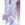

|

BlizzardAngel
Author of 6 Stories |
Disclaimer: I sadly don't own Ranma or any of the characters. Rumiko Takahashi does. I'm only using her awesome characters for fanfictional stories. So I repeat, Rumiko Takahashi is the Creator of Ranma ½
'...' indicates thoughts of the character
*...* will tell you when a flashback appears
Akane
Chapter 3
It felt like she was trapped in that single moment forever. He stumbled on his words, unsure of himself and she knew it. He was not going to want to be with her. He was going to push her away and never speak to her again. Akane's small, shaking body continued to tremble hysterically as her knees grew weak and she slowly fell toward the ground.
Ranma stood dumfounded. He saw the emotional distress she was in and her body was slowly falling away from him. He unconsciously pulled her against him, feeling her shuddering body. He tried to comfort her by rubbing her back gently. He felt her arms shakily make their way around his waist, he pulled her closer. She leaned heavily against his strong, muscular chest and Ranma found himself lost in her embrace at that moment. The feel of her body against his and also knowing the fact that she belonged with him. Feelings for her that he had bottled up just surfaced and that moment on, he knew that he loved her too.
"I... I" How could it be so hard to say three simple words? He knew that he loved her but expressing himself was not one of the things he was best at. He gathered himself, knowing that if she didn't hear the words from him. . . she will leave him. He didn't think he could take the pain of her leaving him as this situation has all ready done a number on his feelings.
"I..I love you too, Akane." He heard her start sobbing again as her arms ran tightly around his neck. He gently ran his hand through her short and soft, black hair.
They stood there for a few moments and Ranma remembered that she was injured. He picked her up and jumped over the wall, from rooftop to rooftop until they got to their house. Ranma went around to the back and jumped up to open Akane's bedroom window. Her body was still trembling as she continued her sobbing in his chest. He set her down on her bed. Akane whimpered.
"Akane, please stop crying." He pulled back a little to look into her red puffy eyes. His hand cupped her cheek softly as her hand touched his hesitantly. He gently wiped away a fallen tear. "I'm here with you now. You don't have to worry about anyone else."
"B, but-"
"I'm only going away on a small training trip with Pop. I will be back. I'll come back here to you. If anything, I'll cancel it, because, I was the one who opted to go..." Ranma reluctantly withdrew from her and walked to her closet and grabbing a pair of her shorts and shirt. "Here put this on and I will take you to Dr. Tofu. We'll get that wound cleaned up."
"Thank you Ranma." She said softly, accepting the clothes he chose for her.
"For what? It was nothin'." He smiled at her. 'Why? Why does she look so cute now?' He couldn't tear his eyes away from her.
"No, thank you for everything." Akane stared at him. His eyes set into hers and she felt herself blush as she turned a slight shade of red. She stood and looked down at her knee. It was a mess...
"Uh, you put your clothes on and I'll come back with a wet cloth to help clean that up." Ranma admired her one last time and left the room.
She took off Ranma's shirt then the silk top and threw on the yellow, sleeve-less shirt and slipped carefully into her black shorts.
Ranma loved her. She couldn't believe it. She had been denying her feelings for so long. Ever since Ranma had come into her life. There was just that little something about him that she found fascinating. That little something she always held on to even in the harshest situation. But now she finally knew what those feelings were and Akane smiled as she waited for him to come back into her room. 'Why am I feeling so, nervous?'
Akane looked down at his red shirt, toying with it, running the fabric through her fingers. She took a glance at the door then back again and slowly picked up the shirt, bringing it close to her face. His scent filled her nose, making a shiver run down her spine. 'It smells so good . . . just like him.' Suddenly she remembered all the times that she imagined herself kissing him. Feeling his lips. Soft, sweet and gentle against hers. His arms wrapped around her body. Him whispering sensuously in her ear.
"Akane? Are you ready?" Ranma opened the door slowly and noticed her siting on her bed looking out the window. "Akane?" She turned quickly and he noticed her shocked expression, like he had caught her doing something wrong. She smiled as her blush deepened redder than before. He walked over to her and knelt down as he wiped away the blood that ran down her leg. Careful not to inflict any more pain to her, he gently ran the cloth up and down as he held her leg softly with his other hand. She fluttered under his touch.
"Are you ready?"
"Yes." She said quietly as she felt his soft hand on her leg.
"Lets hurry to Dr. Tofu so it won't get infected." She nodded and stood up. He helped her stand and guided her to her door, then down the stairs. She tried to hide the pain that the injured knee was giving her, but it shot through her leg painfully. She winced as they took another step forward. "Here," Ranma crouched down in front of her. His back facing her. "I'll give you a piggy back." She stepped back slightly.
"Are you sure?" He turned to look at her.
"Yeah, otherwise I wouldn't have suggested it." He smiled at her "Come on. Get on. I carried you before. It's no different." She smiled back at him and put her hands on his shoulders. She slid her legs down his side and he lifted her up from the ground. She wrapped her arms around his neck as he adjusted her on his back. "Now, just lighten up on the neck, will ya." She moved her grip to his muscular shoulders.
'How does it always end up that he's somehow save me from something?'
Ranma walked out of the house and began toward Dr. Tofu. He held a firm grip on Akane and tried to make sure it was a smooth ride. But that wasn't happening. He felt her bouncing on him. Her breasts were against his back. 'Why am I starting to think about her . . . like this?'
Nabiki was sitting down watching TV when Ranma and Akane open the door. She heard them slip their shoes off and slowly walk up the stairs. Akane even giggled.
'What are they up too?' She silently snuck behind the wall and peeked around the corner, looking at the stairs. 'Okay. Just act casual. I just gotta get the latest info on those two. Maybe I can make a few yen doing it too.'
She creped up the stairs and tiptoed closer to the giggles coming strangely from Akane's bedroom. 'What's the matter with Akane? I never heard her so . . . happy.' She neared her sister's bedroom and suddenly there was silence.
Nabiki raised an eyebrow as she curiously leaned closer to the door, straining her ears for any noise. She almost fell against the door in shock as she heard a grunt. 'W, what are they doing in there?' Unexpectedly, they began speaking.
"Come on... Akane..."
"I'm, uhh, I'm allmoost there!" She nearly yelled, gasping for air. She heard more puffing and wheezing from her sister and Nabiki grinned. Her greedy little mind began to play out different scenarios on how she could earn a lot of yen off of this. She prepared herself for the sight she was going to see and took out her small camera that she always carried with her. With that, she grabbed Akane's doorknob and pushed. Her wide grin disappeared in a matter of seconds. Her mind stumbled on words.
"What are you . . . aren't you suppose to be . . . ?" She stared at the couple, both on the floor, on their stomachs, arm wrestling.
"Hi, Nabiki!" Akane said, hands still locked with Ranma's.
"Ha! You let your guard down!" He smiled as he forced Akane's fist to the carpeted floor.
"No fair Ranma!" Akane sneered in defeat as she stood and walked to her bed. "What did you want Nabiki?" Nabiki suddenly blushed a little, thinking of what they were "suppose" to be doing. She gained her composure quickly and smiled.
"Wow! You guys are getting along? Aren't you supposed to be calling her names, then running for you life, Ranma?"
He looked at Nabiki then to Akane. Both of them had agreed not to let anyone else know of how they felt about each other. "We just fought!" Nabiki crossed her arms and rolled her eyes.
"I hardly call that fighting . . ."
"Well, I got angry because he called me weak and I challenged him," Ranma cut her off.
"And I won!" He snickered as Akane gave him an evil glare. "Well, uh, that's my cue to leave." He jumped to his feet and left her room. Nabiki wasn't satisfied. She wanted more answers.
"Why did you chase Ranma out of the house earlier?" She leaned against the door way with her arms crossed.
"Because we previously had an argument." Akane said nonchalantly.
"About what?" Akane stared at her sister knowing very well of her suspicions.
"Look, Nabiki. Why are you so interested now? You never cared about out fights before! This time wasn't any different from the rest." Nabiki paused as her sister had a point but she was not going to let her off easily. She'd figure out what those two had planned.
Nabiki threw on a whatever expression as she walked out the room. "Sorry Akane. Just looking out for my little sis." With that she headed for her own room. She definitely wasn't going to let them off easily.
Akane settled on to her bed wishing Ranma was there with her, feeling his strong muscles around her body, feeling safe in his arms. She wanted to really live out her dreams and fantasies about Ranma. Akane blushed, but she was so close now that they knew they loved each other. Where could they go and be alone?
Ranma was laying down on his futon staring up at the ceiling with his hands behind his head. This whole day had seem like it was going to turn out horrible. But it didn't. His lips curled into a small smile. They were together now. He was thinking about what just happened. He and Akane were talking in her room when he had heard Nabiki outside the door. He told Akane that she was there and she decided to arm wrestle him, making little unnecessary noises, which kind of made him think. She didn't have to do that, but he guessed she knew that Nabiki thought they were...doing something else. Well knowing Nabiki, if she caught them in the act of anything, they would have to pay dearly.
Ranma smiled lightly, remembering when they got into their positions on the floor. He'd never really seen her so happy. She smiled and whispered to him to play along. He felt her hot breath on his ear and she was so close to him. He could smell the lovely shampoo she used in her hair. He paused. Now that they both confessed their love to each other, how could they be alone? How would he even be able to be alone with her? Ranma couldn't figure anything out. He closed his eyes and begun to drift off in to sleep still wondering and thinking about Akane.
The doorbell rang and Kasumi gracefully walked out of the kitchen to the front door.
"Oh good afternoon!" She said cheerfully. "How may I help you, Kuno?"
"Well if it isn't the lovely, older sister of Akane and Nabiki Tendo. I grace you with my presence this afternoon in urgency to see the middle sister, Tendo Nabiki. Is she in?" She smiled and stepped aside to motion him indoors.
"Yes, please come in. I will get her from her bedroom." Kasumi bowed and turned to get Nabiki.
Nabiki arrived down stairs minutes later.
"Kuno-baby, what's going on?" His face turned serious as he stepped up to her.
"I need your help. I will tell you the details on the way, but I need you to get rid of this annoyance, who continues to stalk me near my home. I will pay you greatly. Please Nabiki Tendo! It's has been the most horrific two days of my life."
This was the first time Kuno came to her home to look for her and offered money. This must be a great day for her little piggy bank. Nabiki grinned as she slipped her shoes on and walked out the house. She wouldn't be back for a few hours.
Kasumi readied a snack for Dr. Tofu. She had to return another one of his books she borrowed for the week. She had to tell Akane and Ranma that she was leaving. Once she walked up the stairs, she headed to Akane's room and knocked.
"Akane, it's me. May I come in?"
"Sure."
She opened the door and took a few steps in her little sister's room. "I'm going to visit Dr. Tofu. Nabiki went somewhere with a friend and Dad and Mr. Saotome will not be back until later tonight. So you and Ranma are going to be alone so make sure you tell him and lock up. Bye!"
Akane was left pondering her words. 'Kasumi was leaving, Nabiki's gone, Dad and . . . oh my god! Ranma and I are by ourselves.' Her mind jumped up in joy but what would they do?
"Geeze, Akane. You asked for time alone and now you're questioning it?" She shook her head. 'Take advantage now!' She stood and grinned.
She slightly opened Ranma's bedroom door to find him laying down sleeping with his arms beneath his head. She smiled lightly at the view as she crept into his room, making her way to Ranma's resting form. She knelt down beside him looking him over from head to toe. She pretty much remembered what he looked like from when she first met him but now this looking had more meaning behind it.
Akane came down slowly and rested her head on his shoulder. She gently placed her arm across his chest and laid there comfortably, feeling the warmth of his body. It was so relaxing, she snuggled closer, curling into a little ball at his side. Her hand came down to the middle of his chest and she slept with the thought of being in her fiancé's arms.
Ranma awoke suddenly with the feeling of weight on his left side. He opened his eyes and noticed the black hair and soon the sleeping form of Akane. As he breathed, her hand rose and fell with his chest. He smiled and turned on his side leaving Akane alone for a moment. She began whimpering as she unconsciously reached for him. Ranma, not wanting to see her suffer, pulled her closer and her eyes suddenly fluttered open.
"Ranma, you're awake."
"Yea and now you are too." He whispered in her ear. She was now fully awake and realized that his arms were around her. Daringly, she slipped her hand beneath his shirt and ran her arm along his smooth stomach to his lower back. She smiled seductively.
"They all left. There's no one in the house to keep me company and I didn't want to be alone." She nuzzled her head into his chest, feeling his heartbeat... and feeling grow faster.
'This feels so good.' Ranma thought to himself as he tightened his grip around her. She began to move her hands to his side and unexpectedly, she began pinching and poking him softly. He clutched his side as he began laughing. She smiled and continued her assault.
"You know, two can play that game!" He grabbed her side and pinched softly as she rolled into a little ball.
"Wait! Stop, I was only kidding." She rolled to her back as Ranma half way leaned on top of her. His leg came in between hers as she locked it with her own.
"I bet I could find other ticklish spots on you." He smiled moving in closer to her beautiful, smiling face.
"I'd like to see you try." Ranma continued to stare in her luscious, brown eyes and her smile slowly disappeared. Her arms came up around his neck, drawing him closer to her. He could feel her warm, sweet breath on his lips and he felt her push her fingers through his soft, black hair. Her eyes shut as his eyes closed slowly as he moved in closer to her.
CRASH!
Both of their eyes shot open and drew in a quick breaths.
"Wha, what was that?"

|
Review this Chapter |